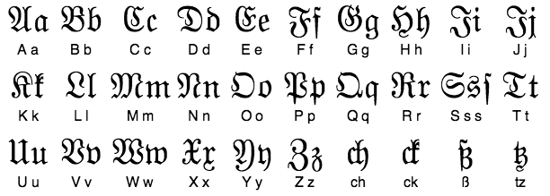

The name "Fraktur" comes from the Latin word fractus, meaning "broken." This refers to the script's distinctive angular strokes, which developed due to the use of quills for writing. Scribes created sharp, fractured letterforms as they wrote, giving the typeface its characteristic look.
In the Chart above it shows 26 letter in the Latin alphabet in addition to ch, st, tz, and ss.
Interestingly, there is a website called Lexilogos that allows users to type in words and see them in Fraktur. This tool can be especially useful for those researching historical documents, as it helps in identifying ancestors' names in old records written in this traditional script.